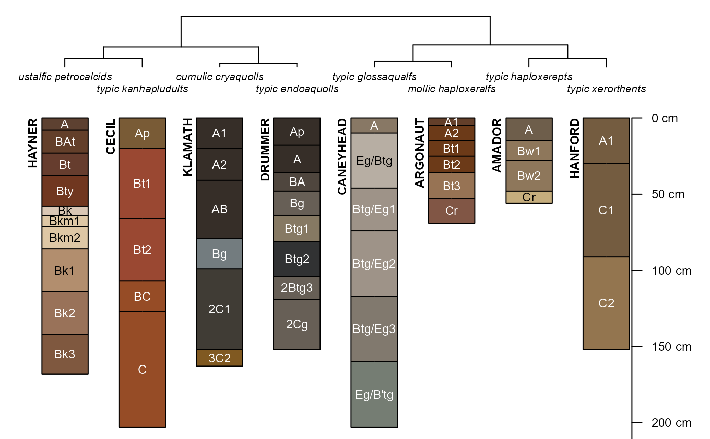
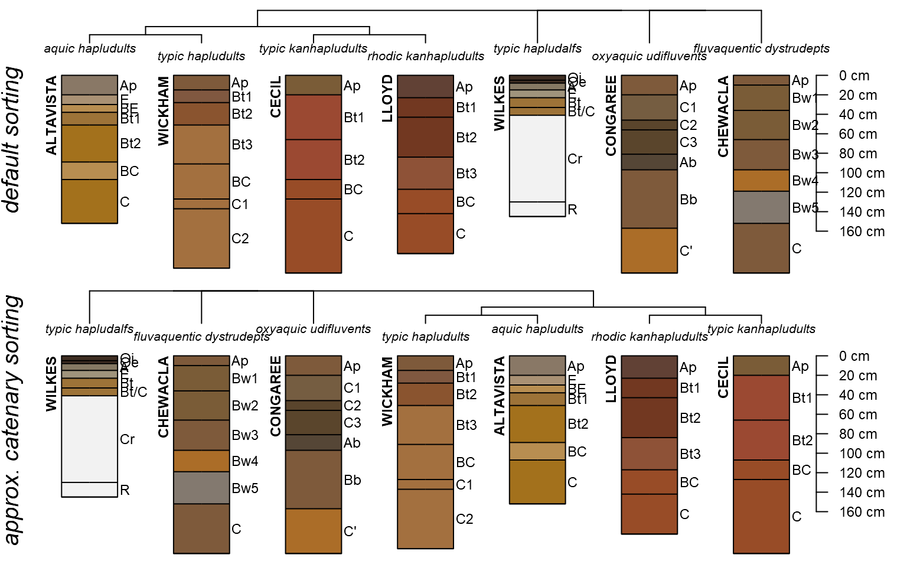

SoilTaxonomyDendrogram.RdPlot a dendrogram based on the first 4 levels of Soil Taxonomy, with soil profiles hanging below. A dissimmilarity matrix is computed using Gower's distance metric for nominal-scale variables, based on order, sub order, great group, and subgroup level taxa. See the Details and Examples sections below for more information.
SoilTaxonomyDendrogram(spc, name = "hzname", name.style = "right-center", rotationOrder = NULL, max.depth = 150, n.depth.ticks = 6, scaling.factor = 0.015, cex.names = 0.75, cex.id = 0.75, axis.line.offset = -4, width = 0.1, y.offset = 0.5, shrink = FALSE, font.id = 2, cex.taxon.labels = 0.66, dend.color = par("fg"), dend.width = 1, ...)
| spc | a |
|---|---|
| name | column name containing horizon names |
| name.style | name.style for |
| rotationOrder | numeric vector with desired ordering of leaves in the dendrogram from left to right, see details |
| max.depth | depth at which profiles are truncated for plotting |
| n.depth.ticks | suggested number of ticks on the depth axis |
| scaling.factor | scaling factor used to convert depth units into plotting units |
| cex.names | character scaling for horizon names |
| cex.id | character scaling for profile IDs |
| axis.line.offset | horizontal offset for depth axis |
| width | width of profiles |
| y.offset | vertical offset between dendrogram and profiles |
| shrink | should long horizon names be shrunk by 80% ? |
| font.id | font style applied to profile id, default is 2 (bold) |
| cex.taxon.labels | character scaling for taxonomic information |
| dend.color | dendrogram line color |
| dend.width | dendrogram line width |
| ... | additional arguments to plotSPC |
This function looks for specific site-level attributes named: soilorder, suborder, greatgroup, and subgroup.
The rotationOrder argument uses (i.e. requires) the dendextend::rotate() function to re-order leaves within the hclust representation of the ST hierarchy. Perfect sorting is not always possible.
An invisibly-returned list containing:
distpair-wise dissimilarity matrix
orderfinal ordering of hclust leaves
D.E. Beaudette, P. Roudier and A.T. O'Geen. 2012. Algorithms for Quantitative Pedology, a Toolkit for Soil Scientists. Computers & Geosciences: 52: 258--268. (doi: 10.1016/j.cageo.2012.10.020)
D.E. Beaudette
# \donttest{ if(requireNamespace("curl") & curl::has_internet() & require(aqp) & require(soilDB) ) { # soils of interest s.list <- c('musick', 'cecil', 'drummer', 'amador', 'pentz', 'reiff', 'san joaquin','montpellier','grangeville','pollasky','ramona') # fetch and convert data into an SPC h <- fetchOSD(s.list) # plot dendrogram + profiles SoilTaxonomyDendrogram(h) # again, this time save the pair-wise dissimilarity matrix # note that there isn't a lot of discrimination between soils (d <- SoilTaxonomyDendrogram(h)) # a different set soils <- c('cecil', 'altavista', 'lloyd', 'wickham', 'wilkes', 'chewacla', 'congaree') # get morphology + extended summaries for sorting of dendrogram s <- fetchOSD(soils, extended = TRUE) # get summary and ignore the figure res <- vizHillslopePosition(s$hillpos) # compare default sorting to soils sorting according to catenary, e.g. # hillslope position par(mar=c(0,0,1,1), mfrow=c(2,1)) SoilTaxonomyDendrogram(s$SPC, width=0.25) mtext('default sorting', side = 2, line=-1, font=3, cex=1.25) SoilTaxonomyDendrogram(s$SPC, rotationOrder = res$order, width=0.25) mtext('approx. catenary sorting', side = 2, line=-1, font=3, cex=1.25) }#> #> #># }